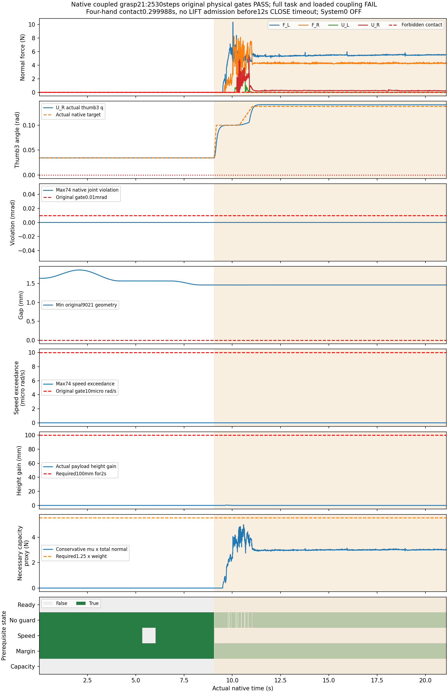
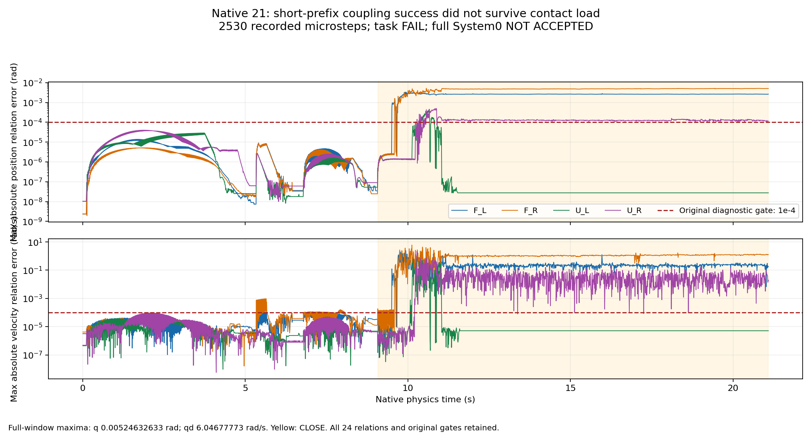

完整 System 0 安全验收未通过。本页是已知开发任务V21的完整原生失败记录。System0与学习策略均关闭，正式独立留出为0；实验配置为2FR3/F2＋2UR5/DFX，尚未推广到标准硬件配置。原门槛、失败记录和完整时间窗均保留。
原始URDF的24条手指耦合已补回隔离资产，并关闭从动关节独立PD。仅提高求解位置迭代后，192物理步诊断曾通过；完整负载试验显示，这个短时结论不能推广到接触夹持。
1265控制周期、2530物理步，21.08249秒。每路318个原生采样帧，时间戳来自真实状态；视频末帧显示停留不增加物理测试时间。物体没有运行时瞬移、固定连接或挂接。
俯视已加宽，四只手与同一物体可在当前片段中辨认。旧日志的相机位姿缓冲仍为默认值，不能用于视角验收；该证据错误已单独记录，后续修复采用实际场景位姿核对。相机证据缺陷及修复方法。模型输入目前是新鲜原生物体位姿、速度、尺寸和接触，视觉感知尚未测试。
| 指标 | V21完整记录 | 原要求 |
|---|---|---|
| 74关节硬限位违规 / 速度超限 | 0rad / 0rad/s | 均不超过1×10⁻⁵ |
| 非预期接触 / 手梁峰值 | 0N / 10.349442N | 不超过0.1N / 30N |
| 9021几何最小间隙 | 1.460701mm | 不低于0 |
| 四手连续接触 | 0.299988秒 | 至少0.25秒，并满足负载与稳定条件 |
| 必要负载容量最大值 | 4.988008N | 至少5.518125N；该量仅是必要代理条件 |
| 真实最大抬升 / 稳定抬升 | 0.481963mm / 0秒 | 100mm且持续2秒 |
| 搬运、放置、真实释放、完整撤离 | 均未完成 | 全部完成 |
必要负载容量始终不足，抬升准入次数为0，闭合12秒后超时退出。独立程序重算2884次逐手反馈、所有实际目标和预抬升判断，均与日志一致。保护决策一致和本窗口原物理门槛通过，不能替代完整任务验收。

| 版本 | 位置/速度迭代 | 物理步 | 最大位置残差rad | 最大速度残差rad/s | 耦合诊断 |
|---|---|---|---|---|---|
| V19 | 64/4 | 192 | 0.000105381012 | 0.00123767322 | 未通过 |
| V20 | 128/4 | 192 | 3.71932983e-05 | 5.35924919e-05 | 短时通过 |
| V21 | 128/4 | 2530 | 0.00524632633 | 6.04677773 | 未通过 |
位置和速度关系门槛均保持1×10⁻⁴，24条关系全部核对；从动关节不能当作独立电机宣称随机覆盖。V20外层工具原回执缺失，保留unknown，未推断为成功；其原生子进程与有限监控回执、独立数据审计保留。完整数值对照与来源。

已发现部分UR从动关节仍接收直接重力补偿力矩。修复把原广义补偿力矩按原URDF耦合关系汇总到独立电机，并保持原电机力矩上限；从动关节直接施力应为0。3项软件测试、400组虚功一致性检查通过，这些不是原生安全实验。软件证据 · 修复实现。640周期的首次接触诊断已完成，具体结果如下；它不作为完整任务或正式留出结果。
修复后的V22已结束，整轮仍未通过：1280物理步从动关节直接施力为0，虚功映射及原生施力逐步独审通过。相机位姿与场景一致，243张操作阶段画面通过三路视角的全四手与物体源几何画幅检查；该检查不证明遮挡或全部机械臂视觉网格可见。但第1279步右F2拇指3速度为−6.721019rad/s，比原6.28rad/s限位超出0.441019rad/s，触发原安全门槛停止；耦合位置与速度残差仍失败。完整1280步侧车与独审 · 真实相机与画幅核对 · 从动施力归零 · 速度失败原始审计。后续数值对照保持相同模型、阈值和640周期范围，只改速度迭代4→1；尚未计为通过。
| 完整要求 | 状态 | 已有证据 | 尚缺 |
|---|---|---|---|
| 回退保持在原始非零速度和延迟下持续安全 | DEVELOPMENT_LONG128_PASS_FORMAL_PENDING | 128条×480周期开发集保持通过；仍非有效操作，正式独立960周期未验收 | 独立冻结多种子与运行时未来安全/制动认证 |
| 保留操作意图并有实际四臂运动 | FAIL | v4安全123/128且四臂指令运动66/128；v5安全116/128且运动128/128。分层路径90%门槛仍失败 | 漏检碰撞和FIFO到达/未来保持；选择性暂停、恢复及任务完成 |
| 强随机、大范围操作空间与定向危害覆盖 | PARTIAL_CONDITIONAL_DEVELOPMENT | 初始26关节跨度平均96.159%、最窄74.625%；48手指起点固定；同一筛选128开发集，单条0.266656s | 随机手指与持续广范围动作、对象与布局/故障分层；边际跨度不等于26维可达覆盖 |
| 科学规范的冻结协议、独立多种子、留出与不确定性报告 | NOT_ACCEPTED | 当前全部为已知开发样本；正式独立留出验收0 | 候选修复后冻结至少两套独立新种子；保留所有失败，报告最坏种子 |
| 物体位置、姿态、大小、速度、可达性进入明确规划与安全输入 | FAIL | 24条URDF耦合、目标展开及零从动PD已落实；192步静态诊断通过，但完整接触负载下位置/速度关系误差达0.005246rad/6.046778rad每秒 | 负载模型验收、烘焙碰撞形状、未来连续状态及真实感知故障 |
| 真实物理夹持、抬升、搬运、放置和释放 | FAIL | V21全2530步原物理门槛通过；四手接触0.299988秒；必要负载容量最大4.988008N低于5.518125N；无抬升准入，任务超时 | 负载耦合精度、稳定摩擦夹持、100mm/2s抬升、搬运放置真实释放及完整撤离 |
| 真实四臂共同任务且有安全与不安全的同输入对照 | FAIL | 四手同梁真实摩擦记录完整；12秒CLOSE未满足抬升准备条件；System0与学习策略均关闭 | 完整协作成功及同输入System0开关配对 |
| 完整原生观测和独立危害判据，无漏测或单看画面 | PASS_RECORDED_BOUNDED_CASES_WITH_LIMITS | 2530物理步全部74关节/9021几何/82刚体点接触与物体摩擦保留；2884反馈决定、耦合目标和预抬升条件独立复核 | 实际烘焙全形状认证、真实视觉感知、延迟到达状态及负载预测界 |
| 网页可审阅的安全对照、完整视角和证据归档 | PARTIAL_SAFE_TASK_COMPARISON_NOT_ACCEPTED | 四路各318源帧的完整视频与全部侧车；俯视加宽；旧相机位姿缓冲记录错误已保留并单独修复 | 实际相机标定及全操作视角验收；完整成功任务和System0对照视频 |
全部2530步、74关节、9021几何、82刚体点接触、物体接触与摩擦侧车索引 · 原物理与完整任务独审 · 24条耦合独审 · 所有阶段目标绑定 · 2884反馈决定 · 负载与抬升准入 · 完整撤离未完成 · 9项完整验收矩阵
开发与正式留出分别计数；失败和证据错误保留。先修复负载模型与完整真实夹持，再冻结机制，执行充分随机手指、物体布局、感知故障及长程独立留出。